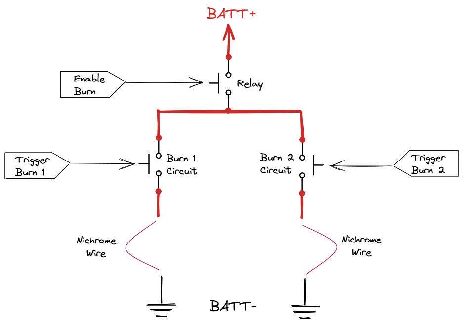

PyCubed Burn Wire Info & Usage
This page explains what CubeSat burn wires are, some common methods and materials to implement them, and then how to use the PyCubed burn wire circuits and helper function.
What is A Burn Wire?
The concept of a burn wire (as a deployment mechanism) is simple:
Tie a deployable down with fishing line using a loop of nichrome wire as the tie-off location on the spacecraft. When it's time to deploy, heat the nichrome wire → melt the fishing line → deploy the panel/antenna/etc..
PyCubed Burn Wires
PyCubed mainboard has two independent burn wire circuits:
- each burn wire can be controlled independently
- designed with radiation resilient components
- fault tolerant & protected by dual interlocks
(see usage tutorial below for more details on fault handling)
.png){kind=link}

Nichrome wire is commonly used as a heating element (in many applications) since it has a high melting point and low oxidation rate. The PyCubed burn wire scheme is designed to use a piece of nichrome wire (or other resistive heating element) to complete the circuit between the burn wire output (BURN1 or BURN2) and ground.

Common Pitfalls of Nichrome Wire Burn Wires
- Inconsistent burn times between boards
Cause & Solution
Nichrome wire does NOT solder well. This results in inconsistent implementations of the nichrome wire loop for the burn wire which will have different resistances and therefore heating rates.
Use the most aggressive flux you have when soldering the nichrome wire to a PCB. Also make sure to weave the wire through a few holes on the PCB prior to soldering to achieve better mechanical support.
- Nichrome wire breaking
Cause & Solution
The nichrome wire gets very hot during a burn. Any oils from your hands or other contaminates can react with the nichrome causing pitting, cracks, and eventually failure. Also take care not to "kink" the wire or make a sharp bend in the exposed loop.
- Power system fails when attempting to burn
Cause & Solution
This nichrome burn wire scheme is essentially just short-circuiting the battery.
Most battery packs will engage their short-circuit protection if current is drawn this quickly. In the case of the PyCubed software, we turn the burn wire circuit on and off very quickly (PWM) as a way of regulating the current below the short-circuit threshold of common battery packs (PyCubed Battery included).
Material Choices
Nichrome Wire
We've successfully used TEMCo's RW0341 for a number of missions. This particular product is 30 AWG "Nichrome 80."
Choosing the appropriate nichrome wire diameter is a balance between:
- being thick enough to mechanically serve as a tie down for the deployer
- but thicker wire will have less resistance and therefore require a longer burn time. You want to minimize burn time since other aspects of the burn circuit (cables, transistors, etc...) are heating up during the burn as well.

Fishing Line
Lots of different kinds of finishing line work for burn wire tie downs. One brand we've used before is "FireLine."
- 20lb (9kg) worked well for our antenna deployment
- this particular product is stranded and made with "Dyneema"
- it's important to avoid a fishing line that melts and oozes around the nichrome wire.
Best thing to do is buy an assortment of finish line and try them.

Using the pycubed.py burn wire methods
The pycubed helper library (⭐pycubed.py) has a reliable and fault-tolerant method for operating the burn wire circuits. Note that enabling the burn wire circuits wont do anything unless a nichrome wire has been installed into the circuit as discussed above.
cubesat.burn() theory of operation
As we learned from the overview diagram above, PyCubed has two burn wire circuits that are downstream from a protection relay. At a high level, cubesat.burn() needs to do the following:
- open the relay
- enable the burn wire circuit for a certain amount of time
- disable the burn wire circuit
- close the relay
Now we will discuss how each of those steps are performed in more detail
1. open the relay
We use a general purpose input/output (aka GPIO) from the SAMD microcontroller to control the relay enable pin. As an extra layer of fault protection, the default state of this GPIO pin uses a "Drive Mode" called OPEN_DRAIN meaning even if a radiation-induced bit flip were to set the GPIO value to "high" it would not be able to open the relay.
- Therefore, the first thing we do is configure the GPIO pin (called
_relayA) to have a "Drive Mode" ofPUSH_PULL
- then we set the pin value to "high" (aka
True, or1) to open the relay
self._relayA.drive_mode=digitalio.DriveMode.PUSH_PULL
self._relayA.value = 12. enable the burn wire circuit for a certain amount of time
Enabling the burn wire circuit isn't as straight forward as the relay because we need to pulse-width module (PWM) the transistor that controls the burn wire circuit in order to regulate the amount of current allowed through the circuit.

We configure the appropriate burn wire control pin for PWM with the following:
if '1' in burn_num:
burnwire = pwmio.PWMOut(board.BURN1, frequency=freq, duty_cycle=0)
elif '2' in burn_num:
burnwire = pwmio.PWMOut(board.BURN2, frequency=freq, duty_cycle=0)It's important to note that the duty cycle is purposefully set to 0 upon configuring the PWM pin. This allows use to control when we want to engage the PWM (like after opening the relay).
We pause for a brief moment to ensure the relay is open before setting the duty cycle above 0% with the following:
burnwire.duty_cycle=dtycyclduty cycle for the circuitpython pwmio.PWMOut() object can be confusing. It's defined as "a 16-bit value representing the fraction of each pulse which is high." This means duty_cycle=0 will always be low, and duty_cycle=0x7fff will be high for half the time.
Our cubesat.burn() method relieves this confusion by converting its dutycycle argument to a percentage (0.0 to 100). If you're curious, that is accomplished like this: dtycycl=int((dutycycle/100)*(0xFFFF))
With the duty cycle now set above 0%, all we have to do is wait for the desired duration:
time.sleep(duration)3. disable the burn wire circuit
Now all we have to do is clean up.
Start by setting the PWM duty cycle back to 0%
burnwire.duty_cycle=0Next, we no longer need to keep the PWM object we created, so we de-initialize it:
burnwire.deinit()Finally, we configure the GPIO pin controlling the relay back to it's OPEN_DRAIN configuration:
self._relayA.drive_mode=digitalio.DriveMode.OPEN_DRAIN
Using cubesat.burn()
Now we understand what the burn() method is doing, let's review how to use it.
cubesat.burn(burn_num, dutycycle, freq) method takes the following arguments:
burn_num(string) identifies which burn wire circuit to operate, must be EITHER '1' or '2'
dutycycle(float) duty cycle percent, must be 0.0 to 100⚠️CAUTION: too high of duty cycle will fry your burn wire circuit or trip battery pack protection. This depends on the resistance of your nichrome burn wire implementation.
freq(float) frequency in Hz of the PWM pulse, default is 1000 Hz⚠️CAUTION: too low of frequency will fry your burn wire circuit or trip battery pack protection. This depends on the resistance of your nichrome burn wire implementation.
duration(float) duration in seconds the burn wire should be on
(how each of the input arguments impact its usage have already been discussed above)
Initial burn testing
As the many caution statement above have said, we need to be careful when using the burn wire circuit because INHERENTLY it is capable of permanent damage to the burn wire circuits.
Begin with the following values and test using a complete burn wire + fishing line setup in order to dial in your burn wire configuration. SLOWLY increase duty cycle by 0.05 increments and retest.
Remember: you don't want the fishing line to slowing ooze over the nichrome wire, you want it to cleanly "pop."
burn_num = '1' # or '2', doesn't matter
dutycycle = 0.05 # START WITH THIS
freq = 1000 # don't change this unless you become really familiar
duration = 1 # avg optimal time to burn your fishing line and double itdon't expect a duty cycle of 0.05 to burn your fishing line in 1 second, this is just where we want to start (to play it safe). While testing, also remember to maintain tension on the fishing line (but not SO much that you kink or break your nichrome).
- With your burn wire test all set up, open the REPL and use the following code to issue a test:
>>> from pycubed import cubesat >>> cubesat.burn(burn_num='1',dutycycle=0.05,duration=1)you should hear the CLICK 🎵 of the relay opening (and the RGB LED turns red)
and you should see the following printout in the terminal:

- Assuming a duty cycle of
0.05doesn't burn your fishing line, we will need to increment the duty cycle. Increasing by a value of0.05is reasonable. But before you run the next test...
- So you have something to compare against...
When testing with this exact nichrome burn wire setup:
We measure a resistance (directly across the nichrome wire) of 0.2 ohms used the same nichrome wire and fishing line linked earlier in this write-up. A PyCubed battery board was used to supply power. Pack voltage measured 8.1V.
- given these variables, our burn wires burned consistently in ~0.5s with a duty cycle of 0.13% (
dutycycle=0.13). Peak current during the burn was measured to be 1.49A.
- given these variables, our burn wires burned consistently in ~0.5s with a duty cycle of 0.13% (
- Equipped with the above example as a baseline, now run the test again with:
cubesat.burn(burn_num='1',dutycycle=0.10,duration=1)
- Rinse, repeat, and be careful!